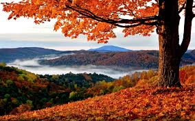

A longely parkbench covered in snow. It is night and snowing heavily.
Photo of spring in the mountains. Vista of a lake, a meadow with spring flowers in the foreground.
A mountain lake in the summer sun.

Hilly landscape with colourful autumn leaves. A tree is seen in the foreground.
A longely parkbench covered in snow. It is night and snowing heavily.